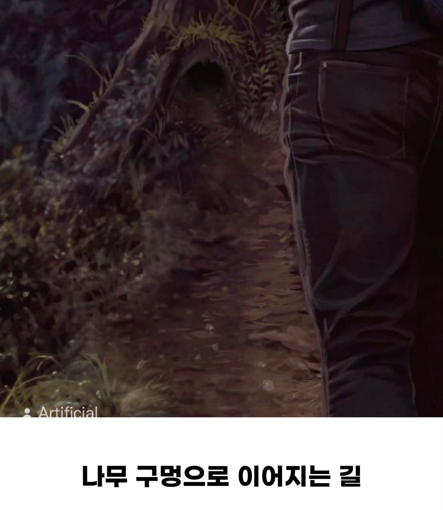

네 지금 그 얘기 한 거에요
사람이 그린거구만 뭘 ㅋㅋ
이런걸 더 많이 만들어야 해
휴먼슬롭
와 머리털 저 특유의 생성형 질감 ㅈㄴ잘표현했네
A I
영어 사용자들은 형용사만 단독으로 제목이 된 게 안 어색한가
한국으로 치면 '인공의'나 '인공적인'이 제목인건데 그럼 좀 이상할 것 같은디
국내 독립영화나 옛날 영화보면 종종 보이긴함
은밀하게 위대하게 영화도 별로 안어색하잖어. 외국인이 단어를 받아들이는거랑 우리가 한국어로 번역한거랑 같은 느낌으로 받아들이면 안됨. unbelievable, outstanding 같이 홀로쓰는것들이 많음
아티피셜은 보통 형용사로 사용되지만 여기서는 보어로 사용 된거야
주어가 생략됐지만 서술하는 보어로 기능하는데 한국어의 서술어와 약간 비슷하지
예를 들어 you're so beautiful 은 너는 참 '아름다워'로 받아들이잖아
한국사람들은 단어를 뷰티풀 - 아름다운 이렇게 외우고는 하는데 별로 좋은 방법은 아니야
너처럼 그저 '-다운'이라는 어미까지 결합된 형태의 '아름다운'이라고 오해하기가 아주 쉽거든
그냥 '아름답다' 라는 늬앙스만 알고 다른 문장요소들과 상황에서 어떻게 쓰이는지 용례를 아는 게 중요하지
제목으로 쓰인 아티피셜도 '인공' '인공적이다' '인위적이다' '부자연스러움' 등의 이미지인데
여기선 '부자연스러운' 이라는 의미만 인식할 뿐 우리말로 정확한 형태의 번역은 힘들다고 생각해
(형태를 제외하고 의미만 따지면 원래 A.I.는 '인공'지능인데 영화는 그걸 비판하는 내용이니까
아티피셜의 조금 다른 의미인 인위적, 부자연스러운 느낌을 강조하면서 비꼬는 전형적인 워드플레이 같아)
그럼 왜 명사형인 Artificiality 를 쓰지않을까
아티피셜리티는 지나치게 학구적이고 제한적이고 논문에서나 쓰일법한 무거운 느낌이야
아티피셜이 훨씬 일반적이고 자연스럽고 의미가 풍부하게 다가오는 것 같고
근데 이런 건 단어마다 늬앙스가 모두 달라서 명사로 사용하는 게 자연스러운 것도 있고
명사와 형용사의 형태가 일치하는 단어도 있고 그래서 항상 관습적으로 어떻게 쓰이냐가 결정하는 듯
위에서 말한 unbelievable, outstanding 도 '믿을 수 없어요', '훌륭하네요' 정도로
'서술'적으로 받아들이지 '-적'처럼 형용사로 받아들이는 원어민은 없을거야
더 엄밀하게 말하자면 평소에 쓰이는 형용사든 보어든 부사든 용례가 한꺼번에 인식돼서
'아 믿을수없다는 거구나' 라는 의미만 쏟아지지
문법적인 격 따위는 생각도 안 날거야 우리는 외국인이다 보니 우리말로 바꾸려니 어려운거지
그래서 의미를 정확히 알려면 항상 늬앙스와 문맥만이 제일 중요하다고 생각해
영영사전, 문장단위로 외우기, 미드 상황 파악하면서 자막없이 보기라는 방법이 중요한 이유지
샘 알트먼 까는 영화라고 한다.
게이섿스나오나
씹게이
저 사람이 ai 아닐까
그리는 과정도 슬롭영상인거 아님? ㅅㅂ
나무뱀과 얼굴박힌 나무는 slop같진 않아.
아니요 반반입니다.
시밬ㅋㅋㅋ

일부러 저렇게 그렸나보네